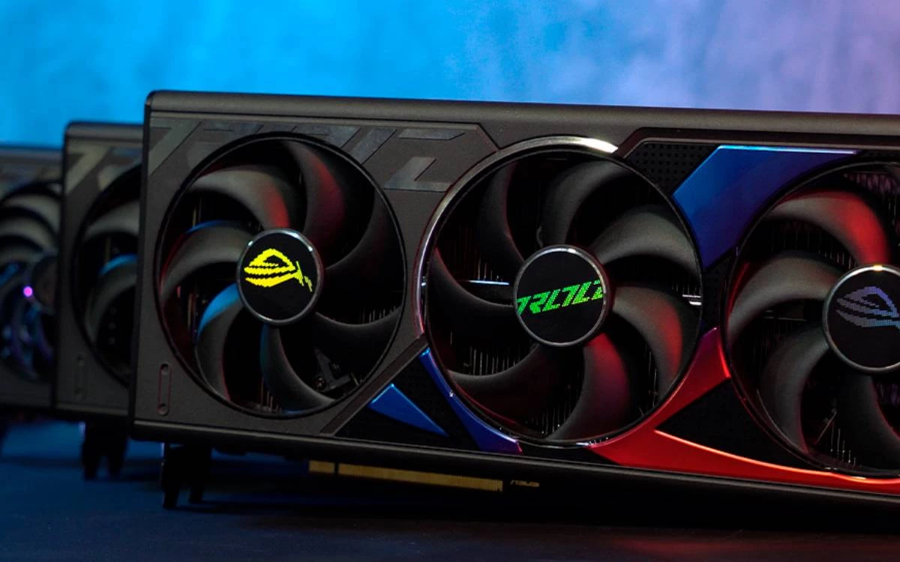

Como instalar uma placa de vídeo no PC

Para o processo, será necessário uma chave de fenda, desligar o interruptor da fonte e retirar todos os conectores de energia da placa já instalada, se houver.
Passo 1
Retire as placas de expansão PCIe da parte traseira do gabinete. Veja se seu modelo de placa de vídeo ocupa um ou dois desses slots. É possível que elas sejam descartáveis ou presas com parafusos, dependendo do modelo do gabinete.

Passo 2
Encontre o slot PCIe x16 da placa-mãe mais próximo do processador. É neste espaço onde a placa de vídeo deve ser instalada para o correto funcionamento. Lembre-se de abrir a trava da conexão antes de tentar inserir a placa.

Passo 3
Encaixe o conector PCIe da placa de vídeo no slot PCIe da placa-mãe empurrando a GPU. Verifique se a conexão foi feita corretamente e se a placa está firme e travada.

Passo 4
Depois disso, fixe a placa de vídeo com os parafusos no gabinete no local indicado. É nesta parte do processo em que será necessário aparafusar o suporte traseiro da GPU no gabinete. Os parafusos, geralmente, acompanham o gabinete.


Passo 5
Na sequência, conecte os cabos fornecedores de energia na placa de vídeo. Em geral, estes cabos acompanham as fontes, mas é possível que seja necessário o uso de algum adaptador que acompanhe a GPU.

Passo 6
Por fim, lembre-se de conectar o cabo DisplayPort ou HDMI nas saídas da placa de vídeo.